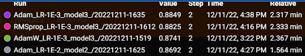
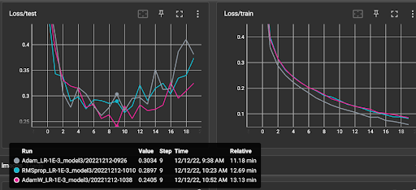
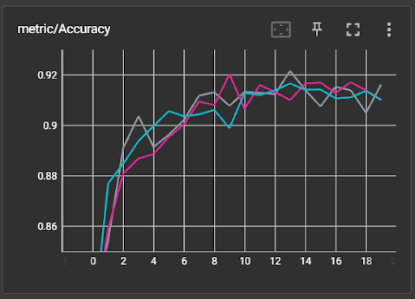

Experimenten deeplearning convolutional layers op Fashion MNIST
Geef in settings.py aan welke combinaties je wilt uitproberen. De modellen bouw je op in het bestand settings_testmodels.py
experiment_parameters_combinations: Dict = {
'trainloop.optimizer' : {
'AdamW' : optim.AdamW,
'SGD' : optim.SGD,
'RMSprop' : optim.RMSprop,
'Adam' : optim.Adam
},
'trainloop.learning_rate' : {
'LR-1E-2' : 0.01,
'LR-1E-3' : 0.001,
'LR-1E-4' : 0.0001,
},
'models' : {
'model1' : 'model1',
'model2' : 'model2',
'model3' : 'model3',
}
}De drie verschillende modellen bestaan uit:
model 1
- 3 convolution lagen
- 16 filters / activation maps
- 2 dense lagen
model 2
- 3 convolution lagen
- 32 filters / activation maps
- 3 dense lagen
model 3
- 3 convolution lagen
- 128 filters / activation maps
- 5 dense lagen
model ResNet18
- 1 convolution laag
- 8 Res blokken met 2 convolution
- 512 filters
Run hierna autmatisch alle combinaties. Resultaten worden in de log map geplaatst.
$poetry run python main.py --task=combine --name=mijn_eigen_experiment_naam
De best scorende resultaten kan je verder testen door in de settings op te geven welke je wilt runnen.
experiments_runs: Dict = {
'run1' : {
'epochs' : 20,
'run_name' : 'Adam_LR-1E-3_model3',
'optimizer' : optim.Adam,
'learning_rate' : 0.001,
'model' : 'model3',
},
'run2' : {
'epochs' : 20,
'run_name' : 'RMSprop_LR-1E-3_model3',
'optimizer' : optim.RMSprop,
'learning_rate' : 0.001,
'model' : 'model3',
},
'run3' : {
'epochs' : 20,
'run_name' : 'AdamW_LR-1E-3_model3',
'optimizer' : optim.AdamW,
'learning_rate' : 0.001,
'model' : 'model3',
}
}Start de runs met onderstaand commando:
$poetry run python main.py --task=runs --name=mijn_eigen_experiment_naam
Resultaten
Hieronder de best scorende resultaten van alle combinaties.
Adam 1e-3 model 3 RMSprop 1e-3 model 3 AdamW 1e-3 model 3

Over het algemeen scoren de runs met optimizer SGD niet goed. Opmerkelijk is dat het er op lijkt dat optimizer SGD beter werkt met een hoge learning rate en een simpel model.

Je ziet hieronder dat na epoch 9 het model gaat overfitten. AdamW geeft hier de hoogste loss in de test set.

